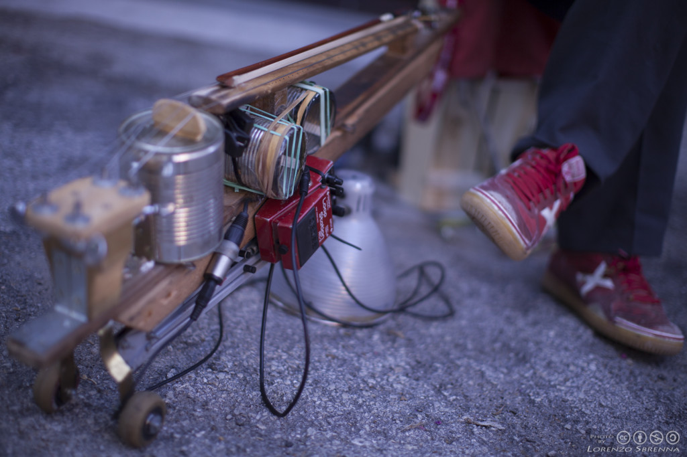

FAR SUONARE LA SPAZZATURA
Se quando si parla di strumenti musicali realizzati con materiali di scarto vi vengono in mente solo i lavoretti che si fanno fare ai bambini, queste band vi faranno ricredere.
Partiamo proprio dall’Italia dove sono nati i Lastanzadigreta. La band è formata da cinque persone: Alan Brunetta (suona percussioni, marimba, tastiera), Flavio Rubatto (sintetizzatori, harmonium e percussioni), Leonardo Laviano (voce e chitarra acustica), Umbero Poli (chitarra acustica e cigar box) e Jacopo Tomatis (mandolino e sintetizzatori). Quello che li rende speciali è che riescono a creare i loro strumenti anche da oggetti sottratti dalle discariche: tubi di acciaio, bidoni per la nafta, vecchie racchette da tennis e giocattoli. Per questa loro particolarità hanno vinto nel 2017 il Premio Tenco.

Sempre in Italia, più precisamente a Lucca, nasce la Gaudats Junk Band, formata da nove componenti che, come fa intuire il loro nome (junk in inglese significa spazzatura) fanno suonare i rifiuti. L’idea è nata da Daniele Guidotti e fondamentale per la band è stato l’incontro con Rossano Ercolini, vincitore del Goldman Environmentale Prize , il “Premio Nobel dell’Ambiente”, che da subito ha appoggiato quest’idea fuori dal comune.
L’ultima band, non per importanza, è l’Orchestra Basura, nata in Messico. I giovani componenti di questa band erano accomunati dalla stessa passione, la musica, ma allo stesso tempo avevano un problema comune: le loro condizioni economiche non gli permettevano di comprare strumenti di alto livello. Da qui nasce l’idea di trasformare la spazzatura nella loro arte. Un asse di legno, collegata ad una pentola come cassa di risonanza, era la base perfetta per una chitarra; un tubo con diversi tappi di bottiglia diventava un flauto e un bidone di lamiera poteva essere una buona idea di partenza per una batteria. Dopo il successo iniziale, hanno tentato di suonare con gli strumenti tradizionali ma il risultato non era lo stesso, e per questo sono tornati quasi subito ai loro strumenti riciclati.